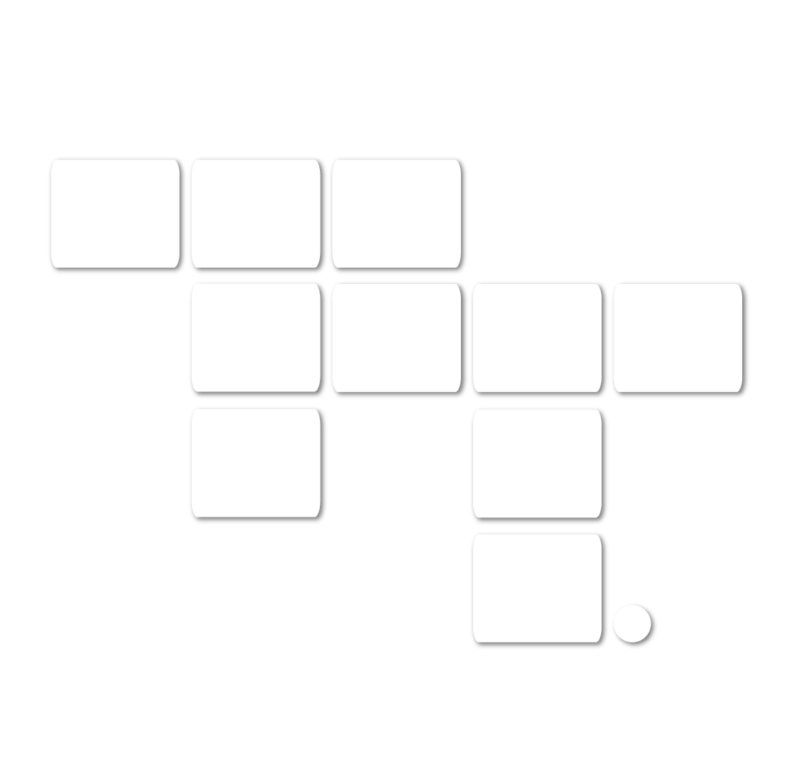

<div class="app">
  <header>
    <div class="logo">
    
      <h2>{{ title.toUpperCase() }}</h2>
    </div>
    <h3>Log In</h3>
  </header>
  <!--Render User Profile-->
  <md-sidenav-container class="pageView">
    <md-sidenav #sidenav mode="push" opened="false" (open-start)="toggleMiniBar()" (close-start)="toggleMiniBar()">
      <div class="user-info">
        <auth0 *ngIf="!authService.isAuthenticated()"></auth0>
        <user-info *ngIf="authService.isAuthenticated()"></user-info>
      </div>
      <!--Render Nav Bar-->
      <div class="container-nav">
        <nav class="nav-bar">
          <div class="col">
            <a routerLink="teams" (click)="sidenav.toggle()" (click)="navService.changeToProjectsPage()"><i class="material-icons">recent_actors</i>TEAMS</a>
            <hr/>
            <a routerLink="projects" (click)="sidenav.toggle()"><i class="material-icons">note</i>PROJECTS</a>
          </div>
          <div *ngIf="navService.currentPage !== 'projects'" class="col">
            <hr/>
            <div class="nav-items">
              <a routerLink="bulletinboard" (click)="sidenav.toggle()"><i class="material-icons">forum</i>BULLETIN BOARD</a>
            </div>
            <hr/>
            <div class="nav-items">
              <a routerLink="sharedresource"><i class="material-icons">folder_shared</i>RESOURCES</a>
            </div>
          </div>
        </nav>
      </div>
    </md-sidenav>
    <div class="content">
      <div *ngIf="showNav" class="mini-bar">
        <div>
          <a (click)="sidenav.toggle()" mdTooltip="Menu" mdTooltipPosition="after"><i class="material-icons">menu</i></a>
          <a routerLink="teams" (click)="navService.changeToProjectsPage()" mdTooltip="Teams" mdTooltipPosition="after"><i class="material-icons">recent_actors</i></a>
        </div>
        <a routerLink="projects"><i class="material-icons" mdTooltip="Projects" mdTooltipPosition="after">note</i></a>
        <div *ngIf="navService.currentPage !== 'projects'" class="col">
          <a routerLink="bulletinboard"><i class="material-icons" mdTooltip="Bulletin Board" mdTooltipPosition="after">forum</i></a>
          <a routerLink="sharedresource"><i class="material-icons" mdTooltip="Resources" mdTooltipPosition="after">folder_shared</i></a>
        </div>
      </div>
      <div class="content-display">
        <router-outlet></router-outlet>
        <!---->
      </div>
    </div>
  </md-sidenav-container>
</div>